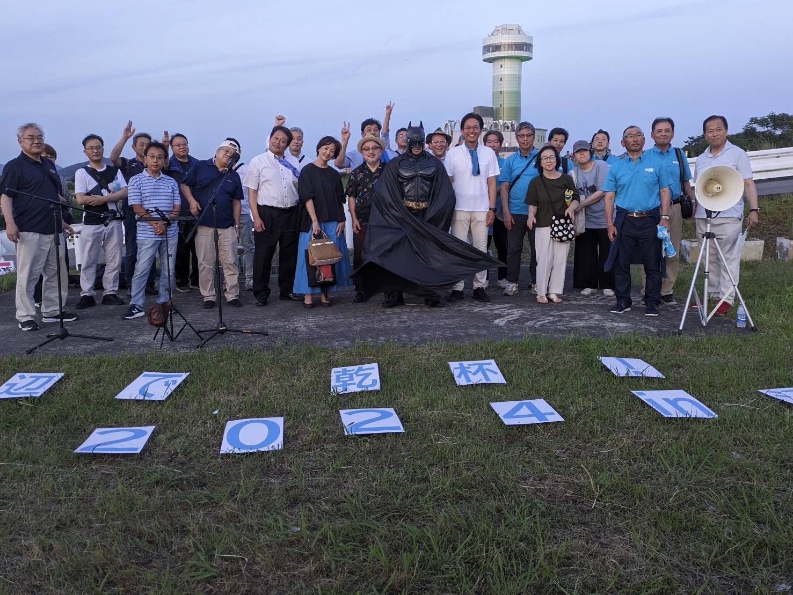

SubAgents・Skills・自動化スクリプトを構築した
Claude Code 学習の全成果物
3つの専門 SubAgent が順次連携して Python コードを自動改善・検証する実践ワークフロー
.claude/agents/ に配置。@エージェント名で呼び出し、または Claude が自動判断して委譲
@analyzer（分析）→ @builder（改善）→ @reviewer（検証）の3段階パイプライン。各エージェントが独立したコンテキストで動作し、前ステージの出力を次ステージへ引き渡す。
コード品質を OWASP・PEP8・設計原則の観点でレビューし、問題点・改善提案をリスト形式で報告
Python コードを解析して関数・クラスの仕様を README 風 Markdown に自動生成
正常系・異常系・境界値の unittest を自動生成し Bash で実行。結果をサマリーで報告
SEO 構成で記事を執筆し char-counter スキルで文字数を ±5% 以内に自動最適化
.claude/commands/ に配置。/コマンド名 または自然文で自動発動
このセッションで構築・GitHub に公開したプロジェクト
7 SubAgent・11 Skills を構築した Claude Code の実験場。claude-code-guide 規約に準拠（name: 除去・model: 短縮名）し、build-and-review パイプラインで実際のコード改善を実証。
↗ GitHubで見る84ファイルを拡張子別に自動仕分け。undo（復元）・重複リネーム・ログ出力・再帰処理・カスタムマッピング・サマリー表示の6機能を段階的に実装し claude-source リポジトリで管理。
↗ GitHubで見る